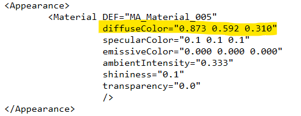

Opis naloge
Naloga je namenjena seznanjanju z X3DOM orodjem in drugimi načini, kako ustvarjamo in realiziramo 3D objekte na spletni strani, brez dodatnega programiranja.
Izdelan 3D model je bilo treba prikazati na spletni strani s tremi načini, in sicer s pomočjo X3DOM-a, Model Viewerja in spletne strani Sketchfab. Nazadnje smo preverili še prednosti in slabosti vsakega izmed načinov.
Za boljše razumevanje smo uporabili primere VRML in X3D ter jih predvajali s pomočjo prikazovalnikov in vtičnikov za spletni brskalnik.
X3DOM
Objekt smo ustvarili v programu Blender, ki je namenjen oblikovanju 3D modelov. Krof smo shranili v formatu X3D in ga s pomočjo vtičnika za spletni brskalnik tudi realizirali.
Težave - X3DOM
Pri izvozu v X3D format smo naleteli na težave z uvažanjem materiala oziroma tekstur modela. Prva različica objekta na spletni strani je bila brezbarvna, zato smo morali spremeniti barvo krofa neposredno v kodi znotraj X3D formata.
3D model smo na spletno stran umestili s pomočjo značke < inline url > . S takšnim načinom nam ni bilo potrebno pretvarjati X3D dokumenta v HTML5 zapis, saj smo model na spletno stran uvozili na podoben način, kot bi uvozili zunanjo CSS slogovno predlogo.
HTML koda, s pomočjo katere smo uvozili 3D model na spletno stran.
Sprememba barv modela znotraj kode v X3D formatu.
Model Viewer
3D model smo ustvarili v programu Blender, ki je namenjen oblikovanju 3D modelov. Krof smo shranili v formatu .glb in ga s pomočjo značke model-viewer vstavili na spletno stran. Gre za zelo enostavno umestitev, pri tem pa je izvožen celotni model, skupaj s teksturami/barvami in svetlobnimi učinki. Ena izmed prednosti je tudi gladko/tekoče zoomiranje 3D objekta.
Sketchfab
Ustvarjen 3D model smo shranili v formatu .glb in ga naložili na spletno stran Sketchfab. Krof smo nato s pomočjo "Embed" možnosti, ki nam jo ponudi Sketchfab, enostavno umestili na spletno stran. Izvožen je bil celotni model, skupaj s teksturami in barvami ter svetlobnimi učinki. Prednost je tudi v gladkem/tekočem zoomiranju objekta.
Med slabosti prištevamo nalaganje na spletno stran Sketchfaba, saj je tam naložen objekt za ogled na voljo vsem uporabnikom.
Prednosti in slabosti
| Način uvoza 3D modela na splet | Prednosti | Slabosti |
|---|---|---|
| X3DOM |
|
|
| Model Viewer |
|
/ |
| Sketchfab |
|
|